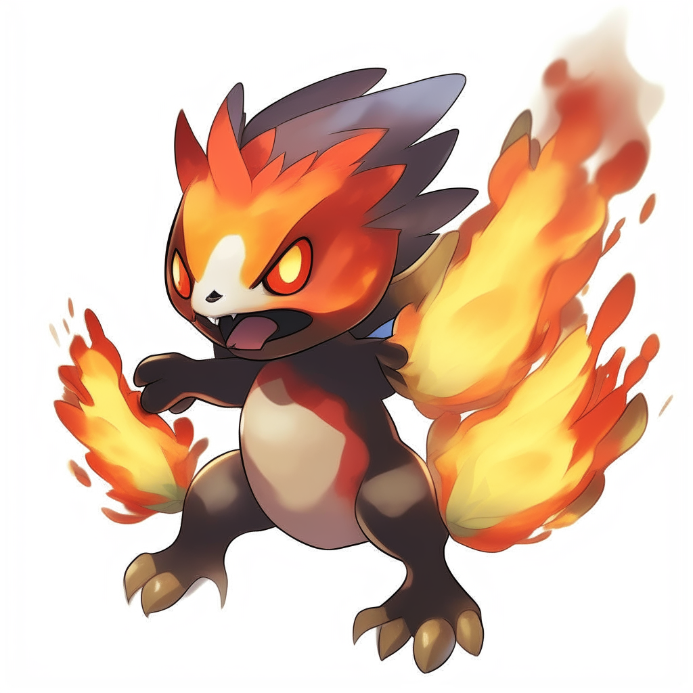

En este lugar encontrarás Pokemon diferentes a los normales con evoluciones alucinantes te dejamos ahora una lista de algunos Pokemons que te podrían interesar fabricados por IA.
| Chorizord | Piquerro | Squirt |
|---|---|---|
|
 | |
Descubre más sobre ellos y sobre MÁS de ellos aquí.
Aquí dejamos nuestro correo electrónico por si quieres recomendar o sugerir pokemons que hayas creado por IA o tu mismo lo hayas dibujado:
Nuestro correo: bergom.esteban.a20@iesvistazul.org